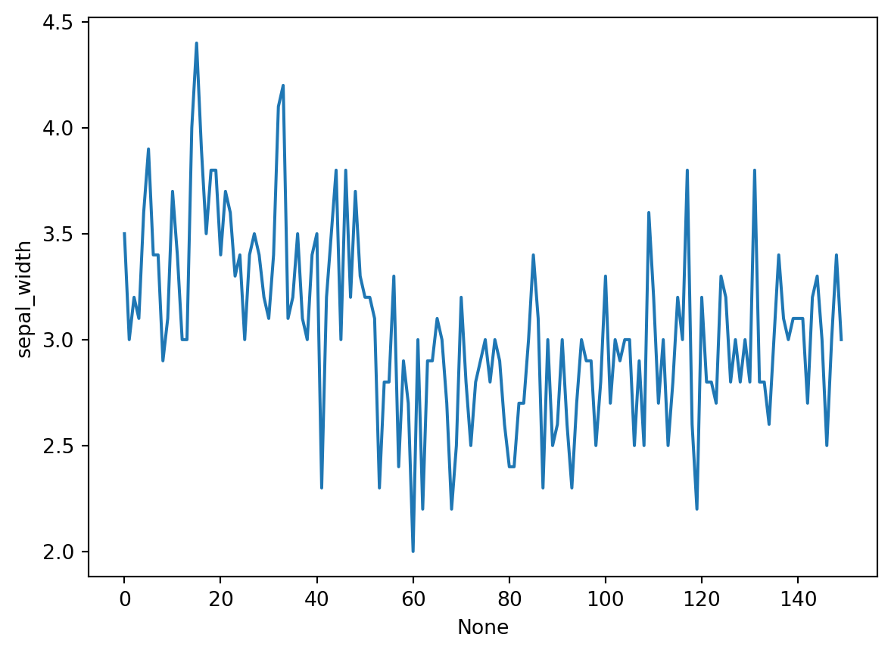

import numpy as np
import pandas as pd
import matplotlib.pyplot as plt
import seaborn as sns
import plotly.express as pxPertemuan 6 : Interactive Data Visualization (plotly)
Interactive Data Visualization using Plotly
Kembali ke EDA
plotly.express
Jika belum terinstall pada jupyter notebook anda, jalankan pip install plotly pada terminal.
Basic Charts
Line Chart
# using the iris dataset
df = px.data.iris()
# plotting the line chart
fig = px.line(df, y="sepal_width")
# showing the plot
fig.show()Apa bedanya dengan line plot biasa?
import matplotlib.pyplot as plt
import seaborn as sns
# plotting the line chart
sns.lineplot(df, y="sepal_width", x=df.index)
# showing the plot
plt.show()
Grouping
# plotting the line chart
fig = px.line(df, y="sepal_width", line_group='species')
# showing the plot
fig.show()# plotting the line chart
fig = px.line(df, y="sepal_width", line_dash='species',
color='species')
# showing the plot
fig.show()Bar Chart
# Loading the data
df = px.data.tips()
# Creating the bar chart
fig = px.bar(df, x='day', y="total_bill")
fig.show()Grouping
# Creating the bar chart
fig = px.bar(df, x='day', y="total_bill", color='sex',
facet_row='time', facet_col='sex')
fig.show()Scatter Plot
# plotting the scatter chart
fig = px.scatter(df, x='total_bill', y="tip")
# showing the plot
fig.show()Grouping
# plotting the scatter chart
fig = px.scatter(df, x='total_bill', y="tip", color='time',
symbol='sex', size='size', facet_row='day',
facet_col='time')
# showing the plot
fig.show()Histogram
# plotting the histogram
fig = px.histogram(df, x="total_bill")
# showing the plot
fig.show()Grouping
# plotting the histogram
fig = px.histogram(df, x="total_bill", color='sex',
nbins=50, histnorm='percent',
barmode='overlay')
# showing the plot
fig.show()Pie Chart
# plotting the pie chart
fig = px.pie(df, values="total_bill", names="day")
# showing the plot
fig.show()Donut Chart
# plotting the donut chart
fig = px.pie(df, values="total_bill", names="day",
color_discrete_sequence=px.colors.sequential.RdBu,
opacity=0.7, hole=0.5)
# showing the plot
fig.show()Box Plot
# plotting the boxplot
fig = px.box(df, x="day", y="tip")
# showing the plot
fig.show()Grouping
# plotting the boxplot
fig = px.box(df, x="day", y="tip", color='sex',
facet_row='time', boxmode='group',
notched=True)
# showing the plot
fig.show()Violin Plot
# plotting the violin plot
fig = px.violin(df, x="day", y="tip")
# showing the plot
fig.show()Grouping
# plotting the violin plot
fig = px.violin(df, x="day", y="tip", color='sex',
facet_row='time', box=True)
# showing the plot
fig.show()3D Plot
# plotting the figure
fig = px.scatter_3d(df, x="total_bill", y="sex", z="tip")
fig.show()Grouping
# plotting the figure
fig = px.scatter_3d(df, x="total_bill", y="sex", z="tip", color='day',
size='total_bill', symbol='time')
fig.show()Adding interaction
Untuk memunculkan tombol-tombol interaktif pada plot, kita menggunakan submodule dari library plotly yaitu plotly.graph_objects
Sliders and Selectors
x = df['total_bill']
y = df['tip']
plot = go.Figure(data=[go.Scatter(
x=x,
y=y,
mode='markers',)
])
plot.update_layout(
xaxis=dict(
rangeselector=dict(
buttons=list([
dict(count=1,
step="day",
stepmode="backward"),
])
),
rangeslider=dict(
visible=True
),
)
)
plot.show()Lebih lanjut silakan buka dokumentasi library plotly pada link berikut : Dokumentasi Plotly
Untuk memperbaiki dan meningkatkan kualitas praktikum kedepannya, silakan berikan feedback anda melalui link berikut : Feedback Praktikum EDA 2023/2024